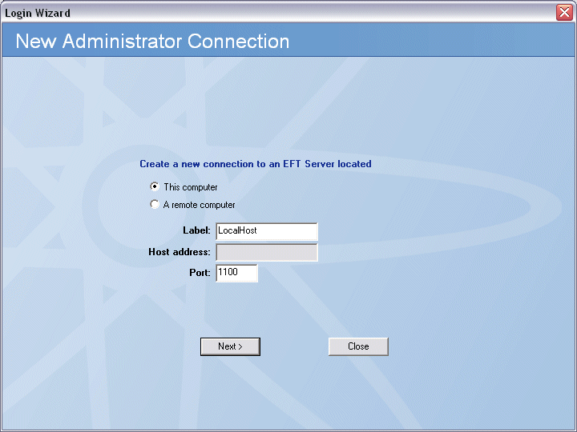
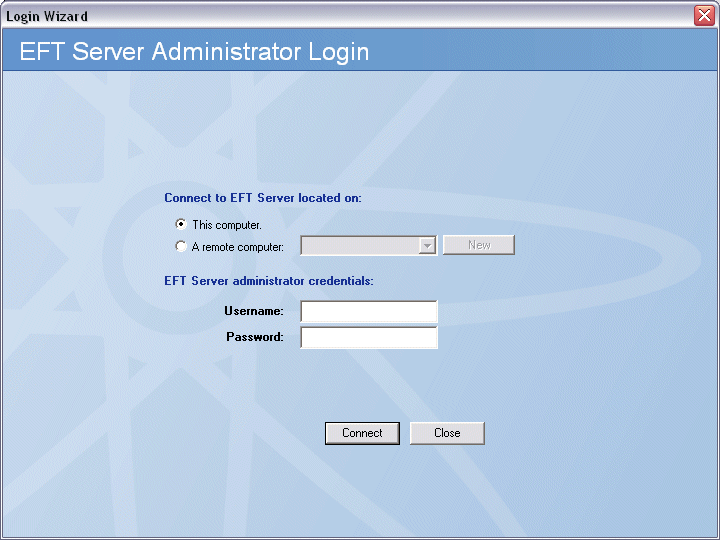
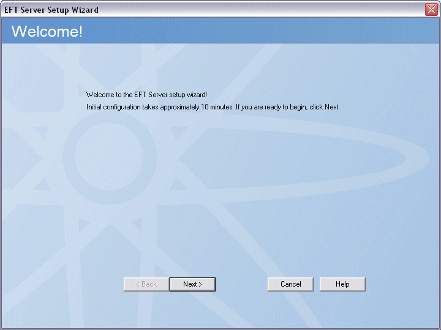
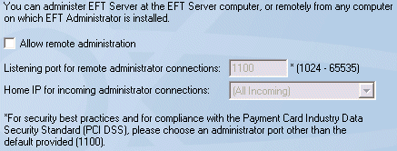
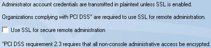
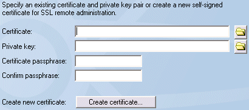
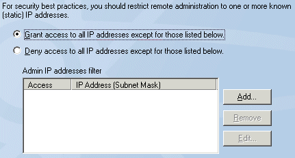
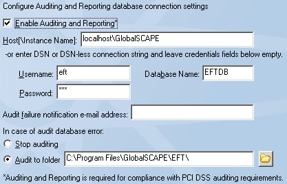
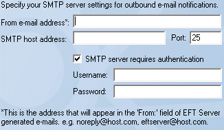

En este curso aprenderas a como configurar un servidor EFT desde la implementación más básica hasta configuraciones más específicas y avanzadas, con esto podrás desempeñar labores de administración o monitoreo de manera correcta.
Módulos del Curso
Tema 1: Tu primer acercamiento al servidor EFT
Tras seguir los procedimientos de Instalación y Activación del Software, el siguiente paso es iniciar sesión en el Servidor EFT mediante el Administrador de EFT y configurar las conexiones del cliente.
Al conectarse al Servidor EFT por primera vez, debe configurarlo en el equipo donde esté instalado el servicio GlobalSCAPE EFT Server. Tras crear la conexión local y habilitar las conexiones remotas, podrá conectarse y administrar el Servidor EFT de forma remota.
Para conectarse a un servidor EFT por primera vez:
- Inicie el Servidor EFT haciendo clic en el acceso directo del menú Inicio o del escritorio (cftpsai.exe). Se abrirá la interfaz del Servidor EFT, Administrador EFT, y aparecerá el asistente para la nueva conexión de administrador.

- Dado que está configurando la conexión local, deje seleccionada la opción "Este equipo" y especifique la etiqueta para la conexión local. De forma predeterminada, la etiqueta es LocalHost. Dado que LocalHost es una etiqueta muy común, conviene cambiarla por una que sea fácilmente identificable en registros de errores, informes y conexiones remotas. Por ejemplo, podría escribir: Servidor SA EFT.
- El cuadro de dirección de host se utiliza para conexiones remotas y no se puede editar para conexiones locales
- En el cuadro Puerto, mantenga el valor predeterminado de 1100 o, para mayor seguridad, cambie el puerto predeterminado de este proveedor a otro que no esté siendo utilizado por otra conexión en la red. Recuerde este número de puerto si planea configurar una conexión remota a este servidor.
- CLic en siguiente. Aparecerá el login.

- En los campos "Nombre de usuario" y "Contraseña", introduzca las credenciales de administrador que creó al instalar el servidor EFT y haga clic en "Conectar". Aparecerá la página de bienvenida del asistente de configuración del servidor EFT.

- Haga clic en Siguiente y siga las instrucciones del asistente y del Asistente de configuración del servidor para crear su primer servidor EFT, o haga clic en Cancelar para hacerlo más tarde.
Después de crear el servidor en el Administrador de EFT, aparecerá el asistente de configuración del sitio para que cree su primer sitio. A continuación, aparecerá el asistente de configuración de usuarios para ayudarle a crear usuarios. (Puede cancelar el asistente una vez creado el servidor o sitio si no tiene tiempo para hacerlo todo de una vez o si desea consultar los archivos de ayuda antes de continuar).
Tema 2: Tipos de autenticación
El servidor EFT admite los siguientes tipos de bases de datos para autenticar usuarios:
- La autenticación del servidor EFT de GlobalSCAPE no depende de fuentes externas para obtener información del usuario. Toda la información de la base de datos es:
- Protegido desde el sistema operativo
- Contenido dentro del archivo .aud ubicado en la carpeta de instalación del servidor EFT (por defecto, C:Program FilesGlobalSCAPE\EFTT)
- Encriptado. Solo puede ser modificado por el Administrador EFT
- La autenticación ODBC permite que todos los usuarios de una base de datos ODBC externa tengan acceso al servidor EFT.
- Autenticación de Windows Active Directory (NTLM/AD). Con este método, el servidor EFT asigna permisos a los usuarios de la base de datos de usuarios de NT en el sistema que lo ejecuta. El servidor EFT consulta al controlador de dominio principal (PDC) de su dominio y agrega todos los usuarios del dominio al árbol del sitio.
- LDAP (Lightweight Directory Access Protocol) es un protocolo para acceder a directorios de información en un servidor LDAP.

Tema 3: Asistente de instalación del servidor
Al instalar el Servidor EFT, al abrir el Administrador, se le indicó que definiera o seleccionara un Servidor EFT para administrar. Al conectarse al servicio del Servidor EFT de GlobalSCAPE, si no se han definido servidores, aparecerá la página de bienvenida del Asistente de configuración del servidor. Este asistente le guiará a través de la configuración inicial del Servidor EFT y del Sitio (en el Administrador de EFT, un Sitio es similar a un servidor FTP virtual vinculado a una o más direcciones IP). El asistente le ayudará a configurar las opciones específicas del Servidor, como la administración remota. Tras completar el breve Asistente de configuración del servidor, podrá ejecutar el Asistente de configuración del Sitio para configurar un Sitio.
Puede cancelar el Asistente de configuración del servidor en cualquier momento haciendo clic en la X de la esquina superior derecha. Sin embargo, se descartarán todos los ajustes realizados, excepto las claves/certificados añadidos al administrador de claves (mediante su creación o importación).
Necesitarás la siguiente información para crear y configurar un servidor:
- Si permite la administración remota del servidor EFT y utiliza SSL (Secure Sockets Layer, un protocolo diseñado e implementado por Netscape Communications, que permite el cifrado de una sesión, la autenticación de un servidor y, opcionalmente, de un cliente, y la autenticación de mensajes), necesita conocer las configuraciones de SSL y tener acceso a las claves y certificados SSL.
- Si está restringiendo la administración remota a direcciones IP específicas, necesita conocer las direcciones IP y los puertos.
- Si utiliza el servidor DMZ Gateway, instálelo y configúrelo antes de crear servidores y sitios. (No es necesario instalar ni configurar DMZ Gateway antes de crear servidores y sitios, pero la configuración será más sencilla si se instalan primero todas las aplicaciones).
Para crear y configurar un servidor EFT
- Inicie el Asistente de configuración del servidor. Si no hay servidores definidos, la página de bienvenida del Asistente de configuración del servidor aparecerá automáticamente al iniciar sesión en EFT Administrator; de lo contrario, en el menú principal, haga clic en Archivo > Agregar nuevo servidor EFT e inicie sesión con las credenciales de inicio de sesión que creó al instalar el servidor.
- Lea la introducción en la página de bienvenida y haga clic en Siguiente. Aparecerá la página de Administración remota.

- Si no desea permitir la administración remota, desmarque la casilla de verificación y luego salte al paso 5.
- Si desea permitir la administración remota, seleccione la casilla de verificación y especifique el puerto de administración y la dirección IP de inicio (o todas las entrantes).
- Haga clic en Siguiente. Si eligió la administración remota, aparecerá la página "Requerir inicio de sesión de administrador seguro".

- Para habilitar la administración remota segura, marque la casilla "Usar SSL para administración remota segura" y haga clic en "Siguiente". Aparecerá la página "Opciones del certificado SSL".

- En los cuadros Certificado y Clave privada, haga clic en el icono de abrir para buscar los archivos del par de claves privadas o haga clic en Crear certificado para crear uno. Consulte Inicio de sesión basado en certificados SSL, Creación de certificados, Importación de un certificado a la base de datos de certificados de confianza e Importación de certificados desde Microsoft IIS 5 para obtener información sobre los certificados.
- Haga clic en Siguiente. Aparecerá la página "Limitar direcciones IP del administrador remoto".

- Especifique si desea denegar el acceso a todas las direcciones IP remotas excepto aquellas que especifique, o si desea conceder acceso a todas las direcciones IP remotas excepto aquellas que especifique y luego agregue las excepciones de direcciones IP a la lista.
- Haga clic en Siguiente. Aparecerá la página Auditoría e informes.

- Si utiliza Auditoría e Informes, marque la casilla "Habilitar Auditoría e Informes" y proporcione la información necesaria para conectarse a la base de datos ARM, como se describe a continuación. De lo contrario, continúe con el siguiente paso.
- En el cuadro Host[\Nombre de instancia], escriba el nombre del servidor o la dirección IP.
- En los cuadros Nombre de usuario y Contraseña, escriba el nombre de usuario y la contraseña utilizados para conectarse a la base de datos (no las credenciales del servidor EFT).
- En el cuadro Nombre de la base de datos, escriba el nombre de la base de datos.
- En el cuadro "Dirección de correo electrónico para notificaciones de errores de auditoría", escriba la dirección a la que el servidor EFT enviará las notificaciones de errores de conexión a la base de datos. Puede agregar tantas direcciones como necesite; sepárelas con una coma o un punto y coma. El servidor EFT utiliza la configuración global de correo electrónico SMTP de la configuración SMTP para enviar los correos electrónicos. Configurará estas opciones en la página siguiente.
- In the In case of database error area, specify an action for EFT Server to take if there is an error with the database. To stop recording data, select Stop auditing. To continue recording data to a file, select Audit to folder, and specify the location for the log file.
- Haga clic en Siguiente. Aparecerá la página para especificar la configuración SMTP.

- En el cuadro Dirección de correo electrónico de, especifique la dirección de correo electrónico para las notificaciones por correo electrónico (como las activadas por reglas de evento).
- En los cuadros de dirección de host SMTP, especifique la dirección de host y el puerto del servidor SMTP.
- Si el servidor SMTP requiere autorización, seleccione la casilla de verificación y proporcione el nombre de usuario y la contraseña.
- Haga clic en Siguiente. La configuración del servidor ha finalizado; puede continuar con el asistente de configuración del sitio o salir de él, guardar la configuración del servidor EFT y configurar el/los sitio(s) más tarde. Debe configurar al menos un sitio para atender las conexiones entrantes al servidor EFT.
- Haga clic en una opción y luego en Finalizar. Si seleccionó "Ejecutar el asistente de configuración del sitio ahora", aparecerá la página de bienvenida del asistente.
Puede ejecutar el asistente de configuración del servidor nuevamente en cualquier momento o modificar la configuración del servidor EFT en el Administrador de EFT.